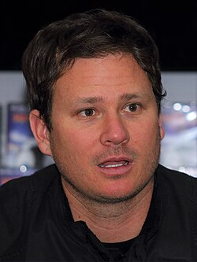

Tom DeLonge
Musician, born 1975

A co-founder of the band Blink-182. In October 2017 he launched To The Stars Academy of Arts and Science with Harold Puthoff, Chris Mellon, and Luis Elizondo. 1
That December the group helped publicize two of the Navy UAP videos alongside The New York Times' story on AATIP. He has also written novels and nonfiction about secret UFO programs. 1,2
Open in the interactive Watcher
Related
- To The Stars Academy launches Launched To The Stars Academy
- Sekret Machines: Chasing Shadows Wrote Sekret Machines
- AATIP His group worked with former AATIP staff
- AATIP revealed AATIP revealed, 2017
- General McCasland goes missing Named Gen. McCasland as an adviser in 2016 emails
Sources
- Tom DeLonge Wikipedia
- Pentagon UFO videos Wikipedia